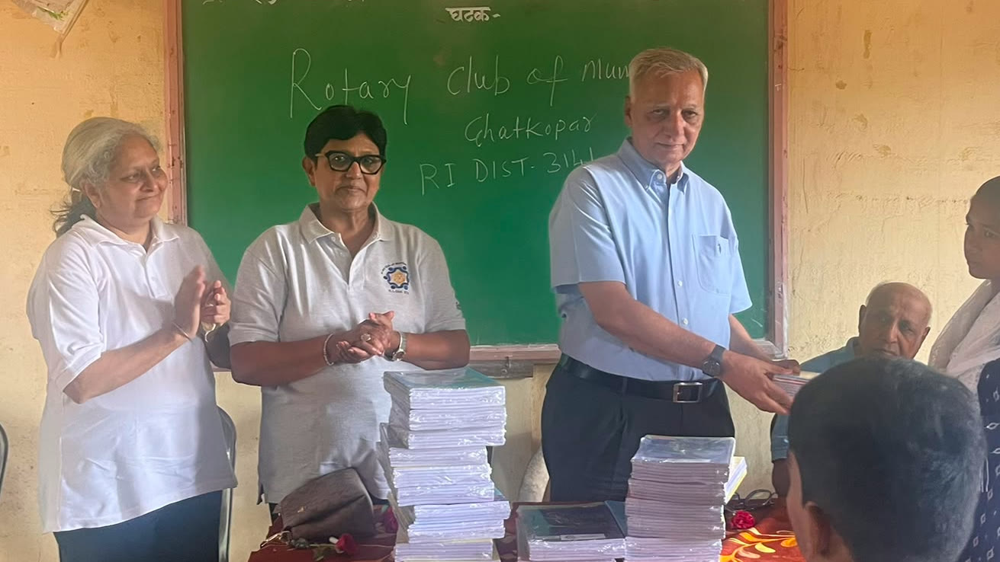

Community Service
Community ServiceRC Bombay Airport
Beach clean-up at Juhu
Volunteers cleared plastic and waste from two kilometres of shoreline.
Community ServiceRC Bombay Airport
Volunteers cleared plastic and waste from two kilometres of shoreline.
 Community Service
Community ServiceRC Bombay Bandra
Menstrual hygiene kits and a health talk for girls in municipal schools.
 Community Service
Community ServiceRC Upper Kandivali
A permanent eye clinic with screening for the neighbourhood.
 Vocational Service
Vocational ServiceRC Bombay
A twelve-week spoken English course for schoolgirls.
 International Service
International ServiceRC Bombay Pier
Dialysis and monitoring equipment funded through a global grant.
 Community Service
Community ServiceRC Vasai
Monthly ration kits for families of daily-wage workers.
 Community Service
Community ServiceRC SkyCity Borivali
Two thousand saplings planted with residents and students.
 New Generation Service
New Generation ServiceRC Wada
Nutritious meals for children in four village schools.
 New Generation Service
New Generation ServiceRC Boisar-Tarapur
A new school building with classrooms, toilets and a library.
 International Service
International ServiceRC Virar
Supplies and temporary shelter for families after the floods.

New Generation ServiceRC Umroli
Notebooks and school kits for the new academic year.
 Community Service
Community ServiceRC Bombay
Meals and water for pilgrims on the way to Pandharpur.
 Club Service
Club ServiceRC Bombay Bandra
A half-day welcome and training for members who joined this year.
 Club Service
Club ServiceRC Bombay Airport
Training for club presidents, secretaries and directors.
Club ServiceRC Vasai
An evening of fellowship with families of members.
Club ServiceRC Virar
Open house to introduce Rotary to professionals in the area.
Vocational ServiceRC Bombay Pier
Awards for nurses, teachers and workers who serve with distinction.
Public ImageRC SkyCity Borivali
A week of stories about club projects across the district.
No project matches your search.